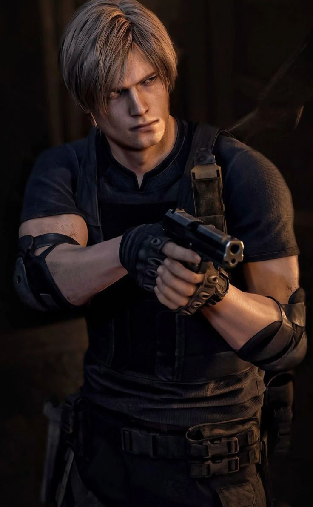
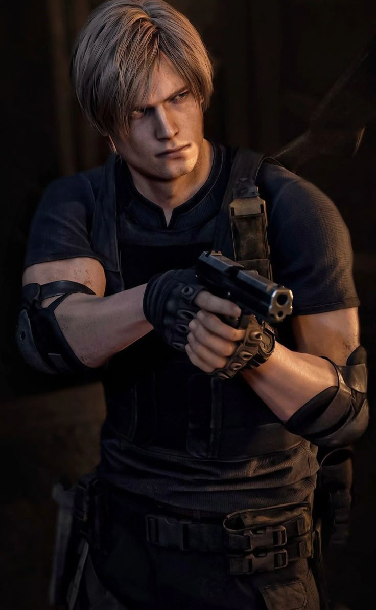

Leon Scott Kennedy hace su primera aparición como uno de los protagonistas de Resident Evil 2. Leon es un agente de policía novato, pero experto en el arte del combate, recientemente contratado por el Departamento de Policía de Raccoon (R.P.D.). Cuando llega a Raccoon City, encuentra la ciudad ya invadida por zombies y otras criaturas. Se une a Claire Redfield, y juntos intentan escapar de la ciudad con vida. Está relacionado con Ada Wong, una mujer que dijo estar buscando a su novio desaparecido (John). Su intento de encontrar una vía de escape lo lleva a un laboratorio subterráneo de Umbrella, donde se enfrenta a varias de las criaturas mutantes de Umbrella. En uno de los epílogos de Resident Evil 3 se revela que Leon se une a una agencia del Gobierno de los Estados Unidos. En Resident Evil: Survivor, el protagonista del juego, Ark Thompson, va a Isla Sheena, a petición de Leon. En Resident Evil CODE: Veronica, Claire se pone en contacto con Leon cuando está atrapada en la Isla Rockfort, y Leon revela el paradero de Claire a su hermano, Chris Redfield. Leon también aparece en Resident Evil: Gaiden, pero con un final bastante abrumador y confuso (de todas formas, este juego no tiene incidencia en el resto; no es canónico). Leon regresa como el protagonista de Resident Evil 4; donde ya se ha convertido en un agente especial del Gobierno de los Estados Unidos, y gracias al hecho de ser un experto combatiente se lo asigna para rescatar a la hija del recién elegido presidente, el padre de Ashley Graham, a quien raptan y la llevan a algún lugar de Europa. Sus secuestradores llegan a ser parte de un culto conocido como Los Iluminados, que ha tomado el control de los pobladores locales con unos parásitos conocidos como Las Plagas. Y una vez más, Leon hace equipo con Ada Wong, trabajando para Albert Wesker y Luis Sera, un ex-investigador de Osmund Saddler, el líder del culto. Leon hace, una vez más, equipo con Claire Redfield en la película Resident Evil: Degeneration para detener otro brote de virus-T.
 
visitar otra pagina
|
wiki

visitar otra pagina
|
wiki